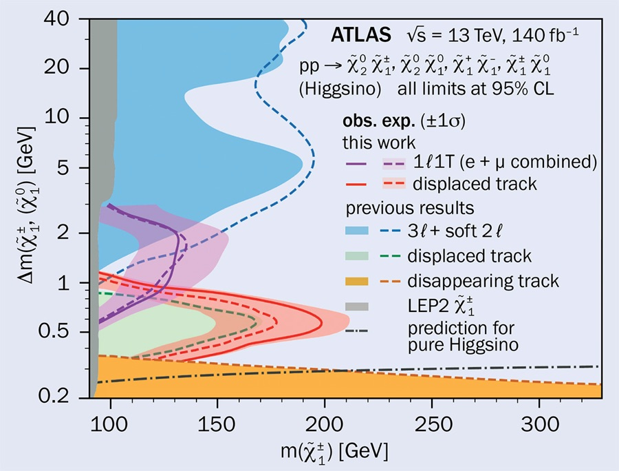
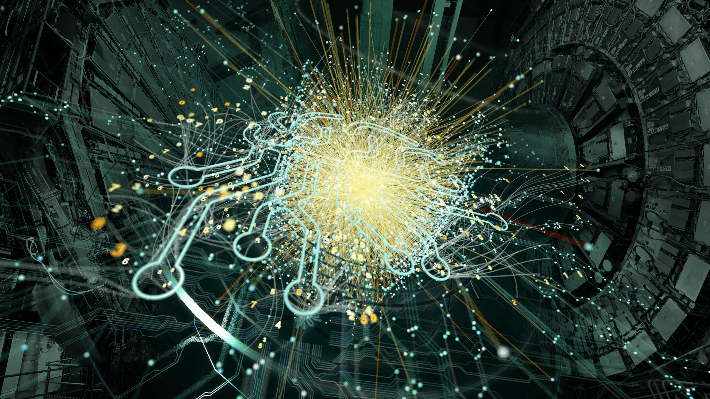

Welcome to the Rankin Lab
We use proton-proton collisions at the CERN Large Hadron Collider (LHC) to test our understanding of the Standard Model of particle physics, and we build the machine learning and real-time trigger systems needed to get the most physics out of LHC data.
Research
Latest News
Latest Papers
Join the group
If you are a student or postdoc interested in collider physics, real-time systems, or machine learning, see how to get involved →
Research
While our focus is on the Large Hadron Collider, many of the tools and techniques we use are broadly applicable across high energy physics and beyond.
Physics at the LHC
We use data from proton-proton collisions at the LHC to probe our understanding of the Standard Model of particle physics. This consists of both direct searches for new physics, such as searches for higgsinos in compressed mass spectra, and precision measurements of known particles, particularly in the highly boosted regime.

Real-time triggers
The LHC collides protons at a rate of 40 million events per second, but the information from each event cannot be stored, due both to bandwidth and overall storage limitations. Instead, the trigger system must analyze each event rapidly and determine if the event should be saved or discarded forever. This is done in multiple stages, on hardware from custom electronics to field programmable gate arrays (FPGAs) to commercial CPUs to GPUs. We aim to understand how best to use this hardware to maximize the physics that can be done.
Machine learning is an extremely promising technique for making efficient use of information in latency- and throughput-constrained systems. We are members of the FastML collaboration, which focuses on problems in this space and supports the hls4ml tool for low-latency ML inference on FPGAs.

Machine learning for discovery
Machine learning is an important tool for making the most of the enormous volume of data we have collected (and will collect) at the LHC, especially as we begin to study more complex processes with subtle signatures. We use ML for an array of tasks, including jet classification, mass regression, and event reconstruction, and our recent work focuses on anomaly detection and self-supervised learning. We are also interested in the use of ML across scientific disciplines, particularly where model size and latency are constrained.
Recent Papers
Group Members
Current Undergraduates
Former Members
Join the group
Prospective graduate students: apply to the Penn Department of Physics and Astronomy Ph.D. program and mention your interest in the group. You are welcome to email ahead of time to discuss research directions.
Penn undergraduates: email a short note describing your interests and any relevant coursework or programming experience.
Postdocs: open positions are advertised when available.
Contact: dsrankin@sas.upenn.edu